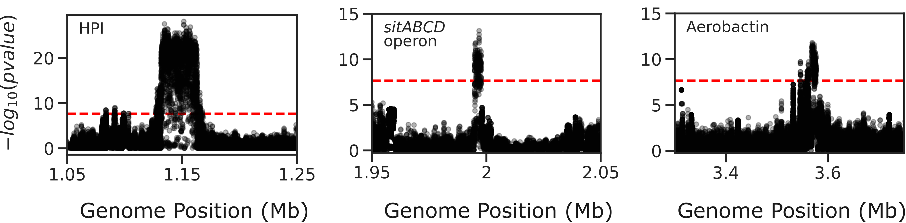
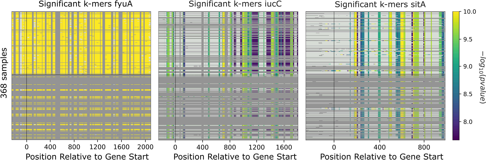
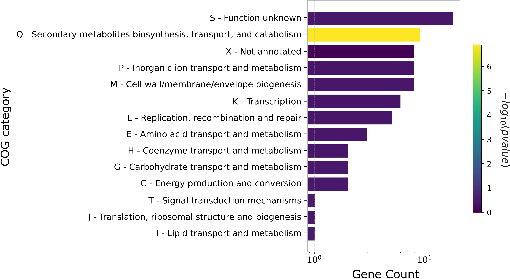

Beginner’s guide
Genome-wide association study (GWAS) is a power test in bacterial genomics that allows one to identify genetic variants associated with a specific phenotype(s).
This guide will walk you through conducting a comprehensive GWAS analysis on 370 Escherichia coli strains using the microGWAS pipeline.
In the study by Galardini et al. (2020) , a mouse model of sepsis was used to characterize the virulence phenotype of the strains.
By following these steps, you will uncover genetic variants (unitigs, gene presence/absence, rare variants , gene cluster specific k-mers) associated with the virulence phenotype in Escherichia coli.
Prerequisites
Basic command-line knowledge
Familiarity with genomic data
A computer with at least 10 GB RAM with 8 cores
Estimated time (TBD)
Before you begin
Prepare Your Data:
Download the phenotype data and save it as specified in Inputs.
Download sample genomes in the required formats:
Ensure that the downloaded genomes meet the requirements stipulated in Inputs
Tip
Double-check that your sample names are not just numbers, as this can cause issues in the analysis.
Set up the environment and configure the pipeline:
Running the microGWAS pipeline
Activate the microGWAS conda environment.
conda activate microGWAS
Run the bootsrapping script.
bash bootstrap.sh 536.fasta,CFT073.fasta,ED1a.fasta,IAI1.fasta,IAI39.fasta,K-12_substr._MG1655.fasta,UMN026.fasta,UTI89.fasta
This script populates the input files used for the analysis and downloads the relevant reference genomes necessary for annotating the hits for Escherichia coli and analyse the variants
To run the full analysis, use the following command.
snakemake -p annotate_summary find_amr_vag map_back manhattan_plots heritability enrichment_plots qq_plots tree --cores 24 --verbose --use-conda --conda-frontend mamba
This will:
Run the GWAS analysis
Annotate the GWAS results with biological and functional information.
Identify antimicrobial resistant and virulence associated genes.
Perform an enrichment analysis for the genes with the associated variants.
Compute the heritability of the phenotype.
Generate visualization plots.
Customizing your analysis
You also have specify which Rules you want the pipeline to run. For example, to run the pipeline without generating a phylogenetic tree:
snakemake -p annotate_summary find_amr_vag map_back manhattan_plots heritability enrichment_plots qq_plots --cores 24 --verbose --use-conda --conda-frontend mamba
This command runs all the same analyses as the previous one, except for generating a phylogenetic tree.
Understanding the results
microGWAS generates multiple outputs files and figures which can be accessed from the out/ directory. For a detailed descripition of all the outputs, refer to Outputs section of this documentation.
For the purpose of this tutorial, we will focus on key results that replicate the findings from the Galardini et al. (2020) study
Unitig-based association analysis
Unitigs are unique DNA sequences that serve as markers for genetic variation. microGWAS uses unitigs with a minimum allele frequency (MAF) of > 1%, and excludes those shorter than 30bp or with problematic mapping.
This Manhattan plot shows unitigs associated with virulences. Peaks above the red dashed line represent genomic regions strongly associated with the virulence phenotype. These unitigs are related to three iron-uptake systems: the high-pathogenecity island (HPI), aerobactin, and the sitABCD operon.
For a closer look at specific regions:
This figure was generated using outputs from the microGWAS pipeline. See script (insert links refrencing the scripts).
Gene cluster-specific k-mer association analysis
This analysis links specific k-mers are linked to their source genes.
These plots represent association for gene cluster specific k-mers for fyuA, iucC, and sitA genes. The y-axis represents each isolate and the x-axis the k-mer positions relative to the gene start codon for each strain. The colors correspond to the -log10 of the association p-value. The dark gray regions imply that the isolates do not encode for the k-mers, while the light gray regions represent k-mers under the association threshold.
Functional Enrichment analysis
This analysis identified overrepresented functional categories among genes with associated variants.
will have to update this figure to reflect the new color scheme
The plot shows enrichment of clusters of orthologous groups (COG) categories. The y-axis of the plot represents each COG catergory, and x-axis the number of gene hits belonging to each category.The bars are colored based on the -log10 of the enrichment corrected p-value.
Troubleshooting
If you encounter issues:
Check the log files in the
out/logs/directory for error messages.Ensure all input files are correctly formatted and placed in the right directories.
Verify that all required databases and dependencies are properly installed.
For persistent problems, consult the Troubleshooting Usage guide or seek help in the project’s issue tracker.